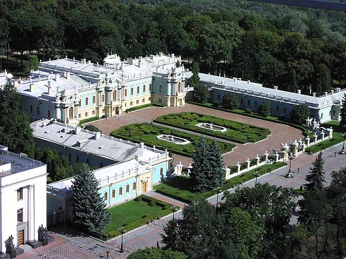

Мариинский парк

Жемчужина парков Киева. Приятно гуляя по аллея Мариинского парка, можно совершенно забыть о времени. В парке находится еще още одна киевская достопримечательность – Мариинский дворец. А перейдя по Мосту влюбленных, можно попасть в Хрещатый парк, который не уступает по своей красоте Мариинскому и является его логическим продолжением.